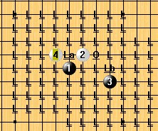

大水月最新进展
#1 大水月最新进展作者：江南新绿 发表时间：2008-9-2 23:35:37
据明教花影教主传言：这样的话，大水月应该可以杀了吧。NND，我受不了了。这个大水月所以，大水月二打情况下白必胜。
#2 Re:大水月最新进展作者：越狱行辕 发表时间：2008-9-3 17:42:45
一打也白必胜
#3 Re:大水月最新进展作者：nara 发表时间：2008-9-3 19:25:38
怎么没有谱啊,新绿,发个谱啊.
#4 Re:大水月最新进展作者：wrwak 发表时间：2008-9-9 23:27:00
白接近必胜 我认为而且白4选点只有2个下错很容易输掉#5 Re:大水月最新进展作者：失落刀 发表时间：2009-1-3 19:43:09

据说是空龙教主的大水月。
#6 Re:大水月最新进展作者：golgyy 发表时间：2009-1-5 15:29:49
5紧靠着3放是什么开局，你想想看
#7 Re:大水月最新进展作者：慕容丨逸灬飞扬 发表时间：2009-12-19 10:16:54
1打？谁给机会你下1打呢？